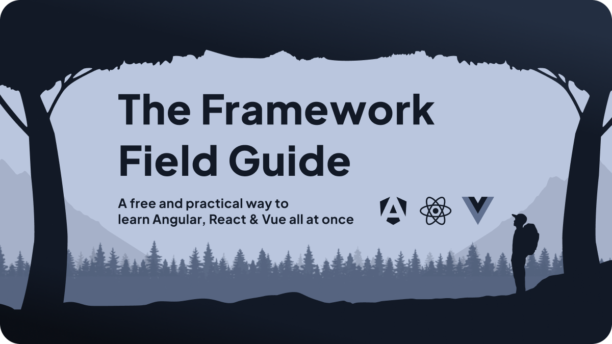

Find the technical direction.
Architecture reviews, focused prototypes, and documented tradeoffs. Start with the business need, then choose a path the team can explain and own.
Engineering leadership. Human perspective.
Sacramento, California
A decade of hands-on engineering.
01 Work history
Good technical decisions need business context. Good teams need it, too. I bring the architecture, delivery practices, and everyday conversations together so people can do their best work.
I oversaw frontend, backend, DevOps, and QA, pairing a substantial architectural rewrite with the operating practices that help a team ship with confidence.
Alongside the code: phased rollouts, capacity planning, retrospectives, 1:1s, a clearer design handoff, and a more consistent hiring process.
About Immersive HomesI migrated React 16 to React 18 in a 1.2-million-line codebase and advised on architecture, technology adoption, and tooling across engineering teams.
My work also included a performance task force, CI/CD, and scaffolding applications within the company’s monorepo.
About DescriptI led frontend development across 14 React and React Native applications, managed frontend hiring, and worked directly with the Director of Technology and CTO.
I also rewrote and redesigned a primary mobile application and documented engineering practices for the wider development team.
About NWYCMar 2021 – Aug 2022
Developer Relations Specialist
Led developer engagement and the guest-author program.
May 2020 – Mar 2021
Frontend Developer
May 2019 – Apr 2020
Render Tier Engineer
Part of the small team that rebuilt Hilton’s search experience.
02 Consulting
When the business is growing, the next technical choice rarely stands alone. I help connect what you need to achieve with what your team can realistically build and support.
Architecture reviews, focused prototypes, and documented tradeoffs. Start with the business need, then choose a path the team can explain and own.
Work through release practices, quality, hiring, and communication with the people doing the work. Build a rhythm your team can keep.
Documentation, technical writing, and developer education that make the next step clear. Turn knowledge held by a few into something others can use.
Selected consulting clients through OceanBit
Founder · Feb 2020 – Jul 2023
Technical writing and documentation restructuring for teams building tools other developers depend on.
My approach to fractional leadership03 Writing
I write to make the next difficult decision a little easier. Sometimes that’s understanding a framework. Sometimes it’s understanding the person on the other side of a conversation.

A book for the curious
A free, practical way to learn React, Angular, and Vue together. Build the mental models that travel with you from one framework to the next.
Read the guideThe uncomfortable parts of leadership: inherited systems, changing responsibilities, and growing alongside the team.
Thoughtful tradeoffs, shared context, and practical ways to help people work well together.
Start here · Leadership04 Open source
A library is part of someone else’s working day. I stay close to the code, the documentation, and the people relying on both.
I lead maintenance of Form, Store, and Config, and contribute to Query and Table. Practical tools, with attention to the developer experience behind every API.
I ported Redux integrations to Angular and Vue and contribute across the Redux ecosystem, helping familiar tools meet developers where they work.
Also helping maintain
05 Let’s talk
Looking for a CTO for your next stage of growth, or a partner for a difficult technical decision? I’d love to understand what you’re building and who you’re building it for.
Start a conversation